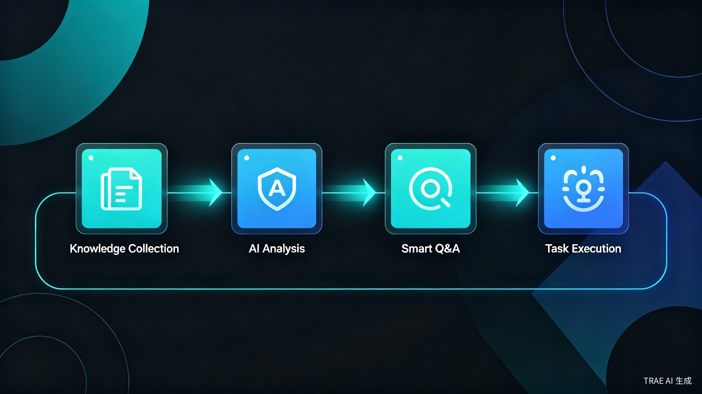

工作、科研、学习和创作中，我们每天都在面对这些困境
笔记软件、网盘、浏览器书签、PDF 文件……资料散落在各个平台，检索困难，整理耗时，知识无法形成体系。
直接向大模型提问，得到的回答往往过于笼统。缺少个人知识库的支撑，AI 无法理解你的具体需求和已有积累。
有了灵感和知识储备，却缺少高效的方式将想法快速验证和实现。从"想到"到"做到"之间，存在巨大的效率断层。
从收集到执行，一站式解决知识管理与智能创作
支持多源资料导入（PDF、网页、文档、笔记），自动分类与标签管理。你的资料就像个人工具库，随时可查、随时可用。
基于个人知识库的 AI 对话，回答精准且有据可依。不再是泛泛而谈，而是基于你的专属资料给出针对性解答。
通过 AI Agent 快速实现你的想法——自动生成报告、撰写文案、分析数据、编写代码，从知识调用到任务执行无缝衔接。
提供通用性 Skill 中间层，根据用户使用习惯自我更新与优化。越用越懂你，形成真正个性化的智能工作流。
从资料收集到想法落地，全流程智能化

多源导入，自动整理
构建专属知识资产
AI 驱动的语义搜索
精准定位所需知识
基于知识库的精准对话
有据可依的回答
AI Agent 自动执行
想法快速落地
不只是工具，更是会成长的智能助手
我们提供的是中间层的优化——通用的 Skill 模块，能够根据每个用户的使用习惯进行自我更新与优化，让 AI 真正成为"你的 AI"。
面向对信息整理和知识复用有高要求的群体
阅读大量论文后需要快速检索、对比和引用，构建学科知识体系
项目资料分散各处，需要整合沉淀为可复用的知识资产
收集灵感素材，随时调用并生成内容框架，提升创作效率
构建个人知识体系，通过 AI 问答深化理解，加速学习进程